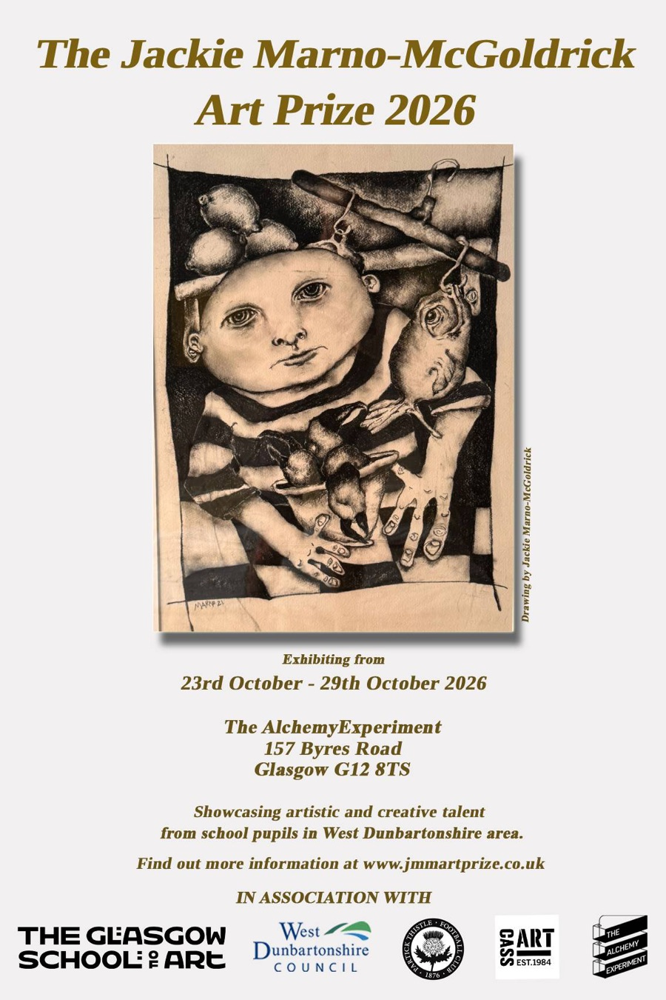

Glasgow · Annual since 2024
An art prize for young people, in memory of a teacher who believed in them
The Jackie Marno-McGoldrick Art Prize is a free annual competition and exhibition for school pupils across West Dunbartonshire, held in Glasgow’s West End. It continues the work of Jackie Marno-McGoldrick, artist and art teacher at Clydebank High School.


Announcement · 2026
This year’s competition is confirmed
The Jackie Marno-McGoldrick Art Prize is going ahead for 2026. We’re keeping the competition true to its roots - free to enter, open to every school pupil across West Dunbartonshire, and built around a real exhibition in Glasgow’s West End - and continuing the work Jackie’s son, Callum Stewart, started in 2024.
The same idea sits behind it as it did on day one: give young people a wall, an audience, and the message that their work matters.
- Exhibiting
- 23 October – 6 November 2026
- Where
- The Alchemy Experiment, 157 Byres Road, Glasgow G12 8TS
- Who can enter
- School pupils across West Dunbartonshire, in any medium
In association with The Glasgow School of Art, West Dunbartonshire Council, Partick Thistle Football Club, Cass Art and The Alchemy Experiment.
In brief
What the prize is
Open to every pupil
Free to enter, open to school pupils up to S6 across West Dunbartonshire, in any medium - painting, drawing, photography, ceramics, design and more.
A real exhibition
Finalists’ work is hung in a public exhibition in Glasgow’s West End, with prizes in every age category and an opening night for families and teachers.
Jackie’s legacy
Founded in 2024 by Jackie’s son, Callum Stewart, to carry on her belief that every child deserves a creative voice.
Partners & supporters